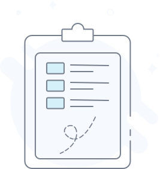

<ion-view hide-nav-bar='true' class="listDetails">

  <div class="menu-tittle">
    <div class="menu-tittle-left">
      
    </div>
    <div class="menu-tittle-middle f17">
      列表页
    </div>
    <div class="menu-tittle-right">
      
    </div>
  </div>


  <ion-content>
    <div class="listDetails-search">

      <i class="icon ion-ios-search-strong f13"></i>
      <input type="search" placeholder="搜索标题 表单内容 提交人 流程名称" class=" f13">

    </div>
    <div class="listDetails-showEmpty">
      
      <span class="f14">还没有任何数据</span>
      <div class="buttons f17">新增数据</div>
    </div>
  </ion-content>

</ion-view>